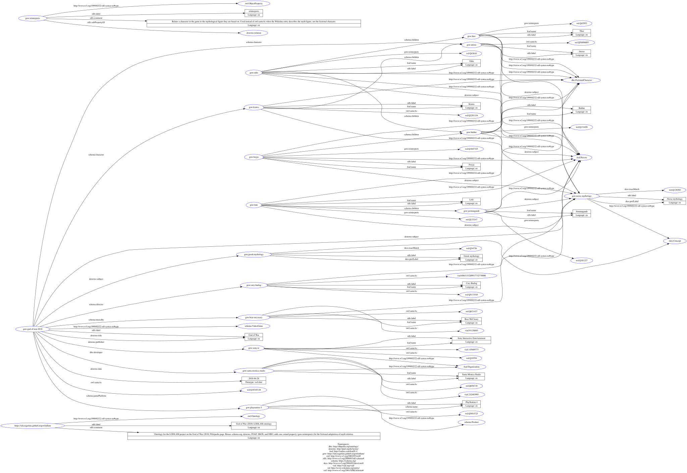

Transformation approach
The graph is built by a Python script (tei_to_rdf.py) that uses lxml for parsing the TEI source and rdflib for constructing and serialising the graph. The script extracts the entity dictionary, the central game record, and every semantic relation from the TEI. The XML is therefore the single data source for both nodes and internal edges; Python supplies reusable mapping rules and validation, not a second hidden list of domain assertions.
Step 1 — Declare the ontology header
Before any entity is processed, the script writes the graph's self-description: an owl:Ontology resource with a label and comment, and the declaration of gow:reinterprets itself as an owl:ObjectProperty with its rdfs:subPropertyOf link to dcterms:relation (the reasoning for this specific placement is argued in full on the Conceptual Model page). This runs first so that the coined term is defined in the graph before anything uses it.
def add_ontology_header(g: Graph) -> None:
ont = URIRef("https://alicesgarlata.github.io/gowlodlam/")
g.add((ont, RDF.type, OWL.Ontology))
g.add((ont, RDFS.label, Literal("God of War (2018) LODLAM ontology", lang="en")))
reinterprets = GOW["reinterprets"]
g.add((reinterprets, RDF.type, OWL.ObjectProperty))
g.add((reinterprets, RDFS.subPropertyOf, DCTERMS.relation))
g.add((reinterprets, RDFS.label, Literal("reinterprets", lang="en")))Step 2 — Branch the reconciliation strategy by entity type and role
This is the step that does the actual semantic work of the project. For every entity in the dictionary, the script looks at both its type (person / org / object / concept) and, for persons, its role (real production credit / fictional character / mythological figure), and picks the reconciliation property accordingly:
if etype == "person":
g.add((uri, RDF.type, FOAF.Person))
g.add((uri, FOAF.name, Literal(name, lang="en")))
if role == "fictional-character":
g.add((uri, RDF.type, DBO.FictionalCharacter))
if wikidata:
g.add((uri, OWL.sameAs, WD[wikidata])) # Wikidata IS the game character
elif role == "mythological-figure":
# Mythological figures act as characters within the game's own
# narrative too, so they get the same typing as Kratos and Atreus —
# this gives gow:reinterprets one uniform domain class.
g.add((uri, RDF.type, DBO.FictionalCharacter))
if wikidata:
# Wikidata describes the MYTH figure, not the game's version —
# owl:sameAs would incorrectly merge the two identities.
g.add((uri, GOW["reinterprets"], WD[wikidata]))
else: # real person: director, composer, …
if wikidata:
g.add((uri, OWL.sameAs, WD[wikidata]))
if viaf:
g.add((uri, OWL.sameAs, VIAF[viaf_id_only(viaf)]))The inline comments in the actual script mark exactly this: that the branch is not a stylistic choice but a semantic necessity, forced by what a Wikidata entry represents for each role. This branching logic is what produces the 12 / 6 / 2 reconciliation split documented below — it is the direct, mechanical consequence of the TEI encoding's @role attribute, set back in Phase 1 when each mythological figure was tagged role="mythological-figure" rather than left the same as a real person. The dbo:FictionalCharacter typing on the elif branch is what makes gow:reinterprets have a single domain class in the conceptual model, rather than splitting its subjects across foaf:Person for some characters and dbo:FictionalCharacter for others.
Step 3 — Materialise the TEI relations generically
The domain assertions are encoded upstream in TEI <relation> elements instead of being hard-coded as calls such as g.add((GOW["odin"], …)). The transformer iterates every relation, treats @active as subject pointers, @ref as the predicate URI, and @passive as object pointers. Local pointers are checked against the entity and game IDs before a triple is added, so a typo such as #baldr fails visibly rather than creating a silent orphan URI.
for relation in root.iter(_q("relation")):
predicate = URIRef(relation.get("ref"))
subjects = [resolve(p) for p in relation.get("active").split()]
objects = [resolve(p) for p in relation.get("passive").split()]
for subject in subjects:
for obj in objects:
g.add((subject, predicate, obj))The actual function also supports TEI @mutual by generating both RDF directions between every pair of participants. The current 12 relation elements expand to 20 internal triples: nine game-level assertions, six figure-to-mythology subject links, and five genealogical assertions. See the Family relations section below for their interpretation.
Step 4 — Serialise and verify
The graph object is serialised to Turtle with a single rdflib call, and verified by reparsing the output and checking the triple count matches:
g.serialize(destination=output_path, format="turtle")
# verification, run separately:
g2 = Graph()
g2.parse(output_path, format="turtle")
assert len(g2) == len(g) # 104 == 104The resulting file is 104 triples across 18 subjects. It round-trips through rdflib — reparsing the serialised Turtle yields the same triple count, so the file is syntactically valid Turtle by round-trip verification, not just by visual inspection.
What the graph actually contains
Rather than only describing the graph in the abstract, here are twelve real triples taken directly from the generated gow.ttl, chosen to show one example of each pattern discussed above:
| Subject | Predicate | Object | Pattern illustrated |
|---|---|---|---|
gow:god-of-war-2018 | owl:sameAs | wd:Q18345138 | The game reconciled to its own Wikidata entity |
gow:god-of-war-2018 | schema:director | gow:cory-barlog | Production relation, game → person |
gow:cory-barlog | owl:sameAs | wd:Q5173545 | Real person → Wikidata |
gow:cory-barlog | owl:sameAs | viaf:6865153289917732770006 | Real person → VIAF (22-digit cluster ID, verified against Wikidata) |
gow:kratos | a | dbo:FictionalCharacter | Fictional-character typing |
gow:baldur | a | dbo:FictionalCharacter | Mythological figures get this too — see callout below |
gow:baldur | gow:reinterprets | wd:Q131658 | Mythological figure — coined property, not sameAs |
gow:odin | dcterms:subject | gow:norse-mythology | Each deity's own link to the pantheon concept, not just the game's |
gow:freyja | schema:children | gow:baldur | In-game genealogy that departs from myth |
gow:loki | schema:children | gow:jormungandr | Myth-derived relation closing the fiction↔myth loop |
gow:norse-mythology | skos:exactMatch | wd:Q128285 | Concept reconciliation via SKOS |
gow:reinterprets | rdfs:subPropertyOf | dcterms:relation | The coined property's own placement in the hierarchy |
Why gow:baldur has two rdf:type triples
Every one of the six mythological figures carries both foaf:Person and dbo:FictionalCharacter — not because they're ambiguous, but because both are true at once. foaf:Person says what kind of thing Baldur is in general (a person, as opposed to an organisation or a place); dbo:FictionalCharacter says that this particular Baldur is encountered as an active character within the game's narrative, exactly like Kratos and Atreus, rather than a background reference. The practical payoff is that gow:reinterprets then has one consistent domain class across all six figures, instead of needing a domain that silently varies by which character is involved.
Why each deity also gets its own dcterms:subject
Originally only the game itself (gow:god-of-war-2018 dcterms:subject gow:norse-mythology) was linked to the pantheon concept. That leaves an implicit gap: nothing in the graph directly says that Odin, Thor, Freyja, Baldur, Loki, and Jörmungandr individually belong to Norse mythology — a query for "who is part of the Norse pantheon" would have to route through the game first. Giving each of the six mythological figures its own dcterms:subject triple to gow:norse-mythology closes that gap directly, without needing skos:narrower to do work it structurally can't do (that property only connects skos:Concept to skos:Concept, and individual deities aren't modelled as concepts here — they're characters).
A number worth a second look, and why it's actually fine
The viaf:6865153289917732770006 triple above looks suspicious at first glance — standard VIAF identifiers are usually 8–12 digits, and a 22-digit string looks like two identifiers pasted together by mistake. It isn't: Wikidata's own documentation for the VIAF cluster ID property specifies a format of "up to 22 digits", precisely because a VIAF cluster ID can represent the merge of several source authority records into one cluster. Cory Barlog's Wikidata entry (Q5173545) genuinely carries this value. This is kept in as a small worked example of why every surprising-looking identifier in this graph was checked against its source rather than assumed to be a typo — the two failure modes (an actual copy-paste error vs. an unusual but valid format) look identical until verified.
Reconciliation, three ways
The single most consequential decision in this phase is how each entity is linked to its Wikidata counterpart. A uniform choice — say, using owl:sameAs everywhere — would be operationally simple but semantically wrong for the mythological figures, as explained in the previous phase. The script therefore differentiates the reconciliation property by entity type, producing three families of assertion in the graph.
| Reconciliation property | Count | Applied to |
|---|---|---|
owl:sameAs |
12 | The game itself, real people (Barlog, McCreary), organisations (SMS, Sony IE), fictional characters whose Wikidata entry is about the game character (Kratos, Atreus), and the PlayStation 4. Real people and organisations additionally receive a second owl:sameAs assertion pointing to their VIAF record. |
gow:reinterprets |
6 | The six mythological figures (Odin, Thor, Freyja, Baldur, Loki, Jörmungandr). Their Wikidata entries describe the myth versions, so an owl:sameAs assertion would incorrectly conflate the game portrayal with the source figure. |
skos:exactMatch |
2 | The two subject concepts, Norse mythology and Greek mythology. skos:exactMatch is the SKOS-preferred way to say that two concepts in different concept schemes carry the same meaning; using owl:sameAs between concepts is technically valid but is discouraged by the SKOS specification. |
The 12 / 6 / 2 breakdown is not decorative: it partitions the graph's external-facing surface into three semantic categories, each with its own consumption story. A downstream consumer that only cares about identity can follow owl:sameAs. A consumer building a mythography can follow gow:reinterprets to reach the source tradition. A consumer aligning subject vocabularies can follow skos:exactMatch.
Game-level relations
Nine assertions attach the game to its production entities, characters, and subjects. Each property is chosen from the vocabulary that most specifically expresses the role, and each assertion originates in the TEI <listRelation>. The Turtle below is generated output, not an independently maintained relation list.
gow:god-of-war-2018 a schema:VideoGame ;
dcterms:title "God of War"@en ;
dcterms:date "2018-04-20"^^xsd:date ;
owl:sameAs wd:Q18345138 ;
schema:director gow:cory-barlog ;
dbo:developer gow:santa-monica-studio ;
dcterms:publisher gow:sony-ie ;
schema:musicBy gow:bear-mccreary ;
schema:gamePlatform gow:playstation-4 ;
schema:character gow:kratos , gow:atreus ;
dcterms:subject gow:norse-mythology , gow:greek-mythology .Using both schema:director for Barlog and dbo:developer for Santa Monica Studio (rather than falling back on dcterms:contributor for both) preserves the distinction between the roles that a downstream query might want to disambiguate. The same reasoning underlies the choice of schema:musicBy over the more generic dcterms:creator for the composer credit.
Family relations and the fiction↔myth loop
Five schema:children assertions carry the genealogies that connect the mythological layer to the fictional one and expose where the game diverges from its source. Their TEI @type values distinguish in-game, myth-derived, and shared game-and-myth genealogy before the same relations are serialised as RDF. These are the triples that turn a static catalogue into a graph with narrative structure.
# In-game: the two protagonists
gow:kratos schema:children gow:atreus .
# In-game genealogy: Odin and Freyja are Baldur's parents
# NOTE: Freyja-as-Baldur's-mother is a game-specific change from myth,
# where Frigg (not Freyja) is Baldur's mother.
gow:odin schema:children gow:baldur .
gow:freyja schema:children gow:baldur .
# Thor is Baldur's half-brother, both are Odin's sons
gow:odin schema:children gow:thor .
# Myth-derived: Loki fathers Jörmungandr.
gow:loki schema:children gow:jormungandr .The last triple is the one that closes the loop. Within the game's narrative, the young Atreus is revealed to be Loki — a fact the source text records but which is deliberately left unmodelled at the identity level (asserting gow:atreus owl:sameAs gow:loki would collapse two entities that the graph benefits from keeping distinct, and would blur the fact that "Loki" only enters the story as a reveal at the end). The Loki-fathers-Jörmungandr triple is a mythological fact that the game does not restate as such, but the game does stage the encounter between the three characters (Kratos, Atreus, Jörmungandr) on the boat. Read together, these separate triples let a downstream consumer trace a loop that the game itself only implies: fiction refers back to myth precisely where it diverges from it and precisely where it encounters it.
Why keep two Baldur mothers in the graph
The graph asserts that in the game Freyja is Baldur's mother, and (through gow:reinterprets) that this Baldur is a reinterpretation of the mythological figure whose canonical mother is Frigg. Neither assertion projects onto the other. The former is a fact about the game world; the latter is a fact about the game's relation to its source. Uncoupling the two is only possible because reconciliation is done with gow:reinterprets instead of owl:sameAs.
Graph visualisation
Rendering the full graph produces a diagram that is dense enough to be worth walking through slowly. The image below was generated by pasting the full contents of gow.ttl into rdf-grapher, a free web service that parses Turtle input and renders it as an SVG using Graphviz. It shows every triple in the graph, including rdf:type declarations and full datatype/property URIs — nothing is filtered out, which is why the diagram is dense: it is a complete, literal picture of the 104 triples, not a simplified summary of them.

SPARQL queries
Three sample queries illustrate the kinds of question the graph can answer. They use the standard prefixes bound in the Turtle file.
Q1 — Which mythological figures does the game reinterpret?
PREFIX gow: <https://alicesgarlata.github.io/gowlodlam/html-rendering.html#>
PREFIX rdfs: <http://www.w3.org/2000/01/rdf-schema#>
SELECT ?character ?mythFigure WHERE {
?character gow:reinterprets ?mythFigure ;
rdfs:label ?characterLabel .
}
ORDER BY ?characterLabelReturns the six pairs (in-game character, Wikidata myth figure). This is the query that operationally defines the fictional-adaptation angle of the whole project.
Q2 — What family relations hold within the graph?
PREFIX schema: <https://schema.org/>
PREFIX rdfs: <http://www.w3.org/2000/01/rdf-schema#>
SELECT ?parentLabel ?childLabel WHERE {
?parent schema:children ?child .
?parent rdfs:label ?parentLabel .
?child rdfs:label ?childLabel .
}
ORDER BY ?parentLabelReturns five parent-child pairs. Notice that Freyja appears as Baldur's parent even though Wikidata's Freyja has no such assertion — that is the game's alternative genealogy speaking, not the myth's.
Q3 — What is Barlog credited for?
PREFIX gow: <https://alicesgarlata.github.io/gowlodlam/html-rendering.html#>
PREFIX rdfs: <http://www.w3.org/2000/01/rdf-schema#>
SELECT ?work ?role WHERE {
?work ?role gow:cory-barlog ;
rdfs:label ?workLabel .
}Returns the game as ?work and schema:director as ?role. Useful as a template: swapping the object URI generalises the query to any production credit.